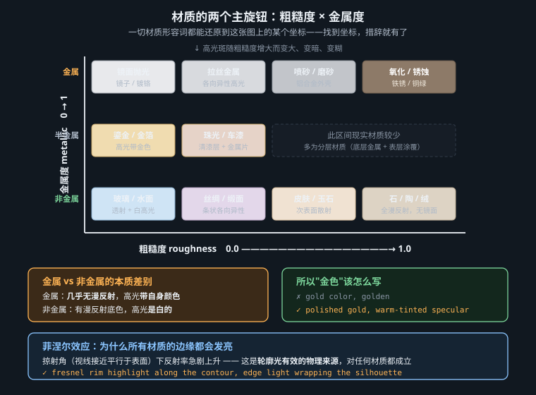
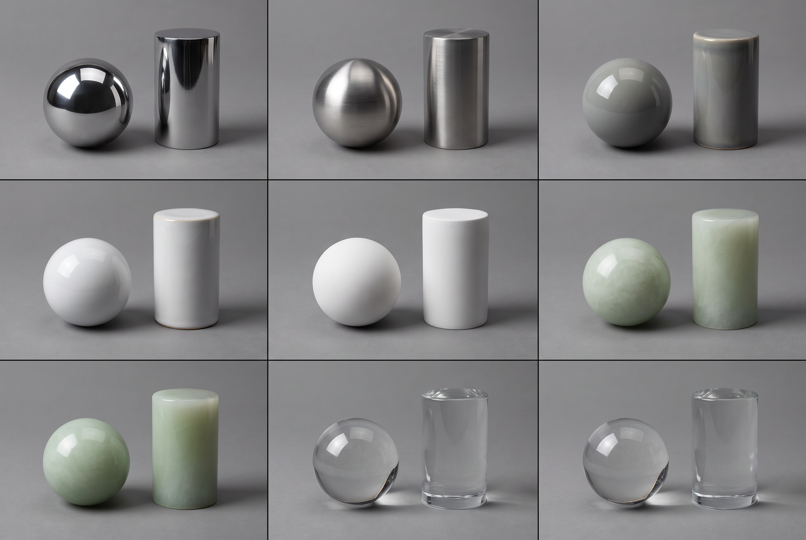

不要背形容词表——把材质还原成五六个物理参数，再把参数翻译成模型听得懂的措辞
中文里描述表面的词有几千个：哑光、亚光、半哑、缎光、镜面、磨砂、拉丝、喷砂、绒面、釉面、包浆、做旧、氧化……你可以背一辈子，也永远会遇到没背过的那一个。
但物理上，一个不透明表面对光的全部响应，只需要三到四个数就基本定死：基色（base color）、粗糙度（roughness）、金属度（metallic），再加一个可选的各向异性方向。这不是我的简化，这是 2012 年迪士尼提出 Principled BRDF 之后整个渲染行业收敛出来的结论——Unreal、Unity、Blender、Substance、Arnold，材质球的核心滑块就是这几个。它们能覆盖现实中绝大多数不透明材质，因为它们直接对应了光在微观尺度上发生的事。
再加上两个"光进到里面去了"的参数——次表面散射（subsurface scattering）与透射/折射率（transmission / IOR）——你就拿到了几乎全部现实材质的钥匙。
AI 模型不接受数值参数，你没法给 MJ 写 roughness=0.3。
但训练数据里的图像描述（caption）是人类用语言写的，而人类描述表面时，用的恰恰就是这些参数的语言化形式：glossy、matte、satin、brushed、waxy。
所以正确的流程是三步：① 在脑子里把目标材质拆成参数 → ② 查"参数 → 措辞"翻译表 → ③ 写进提示词。本章第六节就是这张翻译表，它是本章最该被收藏的东西。
微表面理论（microfacet theory）说：任何看起来平整的宏观表面，在微观上都是无数个朝向略有差异的微小镜面。粗糙度描述的不是"凹凸有多深"，而是这些微镜面的法线分布有多分散（渲染里用 GGX / Trowbridge-Reitz 这类分布函数来建模）。
反射出去的光总量不会因为粗糙度而增加，只会被摊开。所以高光斑变大，必然变暗；高光斑很亮，必然很小。
"又大又亮的高光"在物理上只有一种成因：光源本身面积很大（大柔光箱、阴天的整片天空）。
当你看到一张 AI 图，主体上糊着一大团又大又亮的白斑、而画面里并没有交代大面积光源时——这张图的材质是假的。这也是"AI 味"最常见的来源之一：模型把高光当成一种"发光的装饰"贴上去，而不是当成光源的像。
更有用的一句话是：高光斑 = 光源的形状 × 粗糙度带来的模糊。因此提示词里写 softbox reflection visible in the surface（表面上能看到柔光箱的反光）远比写 glossy 有效——前者同时锁定了低粗糙度和一个有形状的光源，后者只是个模糊的倾向。
| 粗糙度 | 高光表现 | 现实材质 | 提示词措辞 |
|---|---|---|---|
| 0.0 – 0.1 | 清晰成像，能看清反射内容 | 镜子、抛光金属、钢琴烤漆、静止水面、湿润皮肤 | mirror-polished, high-gloss lacquer, wet glossy surface |
| 0.2 – 0.3 | 高光集中但边缘柔化，反射内容可辨认轮廓 | 釉面陶瓷、抛光大理石、绸缎、上蜡木器 | satin sheen, glazed ceramic, polished stone |
| 0.4 – 0.5 | 宽而柔的光带，反射内容只剩明暗块 | 拉丝金属、半哑塑料、旧皮革、哑光漆 | semi-matte, soft broad highlight, brushed finish |
| 0.6 – 0.7 | 几乎无可辨高光，只有大面积微弱提亮 | 磨砂玻璃、未上釉陶土、铸铁、砂岩 | matte, unglazed, sandblasted, rough cast surface |
| 0.8 – 1.0 | 纯漫反射，明暗完全由法线决定 | 粉笔、石膏、绒面革、毛毡、新雪 | completely matte, chalky, velvety diffuse, light-absorbing |

金属度不是一个"程度"滑块，它是一个二选一的开关（中间值只在锈蚀、脏污等混合区域才有意义）。因为导体和电介质对光的处理方式根本不同：
写法 A（错）：gold color, golden
模型把它理解成"一种黄色"，结果是黄色塑料——有白色高光、有均匀的黄色漫反射面，看起来像儿童玩具。
写法 B（对）：
polished gold, warm-tinted specular highlights, no diffuse color, mirror reflections of the surrounding environment, sharp bright-to-dark contrast across the form
四句话分别对应：金属度=1 / 高光有色 / 漫反射=0 / 金属特有的高对比过渡。
既然金属看到的全是反射，那么放在纯白无限背景里的金属永远不像金属——它没有可反射的内容，只能反射出一片均匀的白，看起来就是浅灰色塑料。这是"AI 金属画成塑料"的头号成因。
解法是在提示词里给它一个环境：reflecting a warm studio environment with dark surroundings、studio HDRI reflections, bright strip highlights and deep dark reflections。明暗反差极大的反射内容，是金属感的本体。
反射率随观察角变化。用 Schlick 近似写出来是 F = F0 + (1 − F0)(1 − cos θ)5：正对着看时反射率等于 F0（非金属只有 4%），但当视线越来越贴近表面（掠射角，θ → 90°），反射率趋近于 100%——任何材质都会变成镜子。
现实里到处是它的证据：远处的沥青路面在雨后（甚至干燥时）反光如镜，脚下的却不反光；湖面近处能看见水底、远处只剩天空的倒影；穿绒面外套的人在逆光下整个轮廓毛茸茸地发亮。
这就是提示词里 rim highlight along the edge 有效的原因。不是因为"边缘发光很好看"这种审美偏好，而是因为物体的边缘正是法线与视线接近垂直（即掠射角）的区域，训练集里的照片里那一圈本来就是亮的。你写的是一个真实存在的物理现象，模型自然响应得稳。
grazing-angle sheen along the silhouette, fresnel rim light separating the subject from the dark background
前面讲的都是"光在表面弹回来"。但对半透明介质，光会穿进去，在内部经历几十上百次散射，再从离入射点有一段距离的地方射出来。判断一个材质要不要 SSS，看的是它的平均自由程相对于物体厚度：如果光在被完全吸收之前能走出一段可见的距离，就会出现 SSS。
皮肤（尤其是耳廓、鼻翼、指缝这些薄的地方）、玉石、大理石、牛奶、蜡烛、树叶、水果切片、生鱼片——它们表面看起来毫无共同点，物理机制却是同一个。
SSS 在画面上的三个可辨识特征，也是提示词该去描述的三件事：
subsurface scattering, light penetrating the surface, warm red translucency through the thin edges of the ears, soft shadow terminator
次表面散射必须靠逆光或侧逆光才能显现——正面平光下，透进去的那点光完全淹没在表面反射里，你看不见任何差别。所以 subsurface scattering 这个词单独出现在提示词里基本是浪费 token，它必须和 backlit / rim-lit / light source behind the subject 一起写。这是本章最容易被忽略的联动关系。
完全透明的介质（玻璃、水、冰、宝石）由折射率 IOR 主导。IOR 同时决定两件事：光线穿过界面时弯折多少，以及正面反射率 F0 有多高（F0 = ((n−1)/(n+1))²）。
| 介质 | IOR | F0（正面反射率） | 视觉后果 |
|---|---|---|---|
| 空气 | 1.00 | — | 基准 |
| 水 | 1.33 | 约 2% | 正面几乎全透，掠射角变镜面 |
| 冰 | 1.31 | 约 2% | 同水，但内部气泡与裂面产生大量散射 |
| 普通玻璃 | 1.52 | 约 4% | 轻微弯折，边缘变厚处颜色加深 |
| 蓝宝石 | 1.77 | 约 7.7% | 反射明显增强，"有分量" |
| 钻石 | 2.42 | 约 17% | 反射强、全内反射频繁 → 火彩 |
曲面把光聚焦成明亮的线或斑，就是焦散 caustics：泳池底部晃动的网纹、酒杯旁边桌面上那块心形亮斑、玻璃器皿在桌上投下的"亮影子"。焦散是判断一张玻璃图真假的最快标准——AI 常给出正确的玻璃本体，却在它的影子里露馅（影子画成了均匀的灰块，而真实玻璃的影子中央是亮的）。
caustic light patterns cast on the table beside the glass, bright focused light spot inside the shadow
前面默认微表面的粗糙在各个方向上是一样的（各向同性），高光斑因此是圆的。但如果表面上有平行的微观沟槽，情况就变了：沿着沟槽方向表面是"光滑"的，垂直沟槽方向是"粗糙"的。结果是高光在垂直于沟槽的方向被摊开——圆斑被拉成条带。
提示词的关键是必须指定方向，否则模型只会给你一个普通的亮斑：
brushed aluminium, anisotropic streak highlights running horizontally along the grain direction
把前五节压缩成一张可以直接查的表。用法：先决定每一行的值，再把右列的措辞按需拼进提示词的"材质"段。
| 物理参数 | 你要的值 | 写进提示词的措辞 |
|---|---|---|
| 粗糙度 | 低 | mirror-polished / high-gloss / crisp specular reflections / softbox reflection visible on the surface |
| 中 | satin finish / soft broad highlight / semi-matte | |
| 高 | completely matte / chalky diffuse surface / no visible specular | |
| 金属度 | 金属 | metallic, colored specular highlights, no diffuse component, sharp environment reflections |
| 非金属 | dielectric surface, neutral white highlights, color comes from the diffuse layer | |
| 菲涅尔 | 强调 | fresnel rim light / grazing-angle sheen along the silhouette / edges catching the light |
| 次表面散射 | 强 | subsurface scattering, translucent, light glowing through the thin parts + 必须配 backlit |
| 透射 | 透明 | transparent, refracting the background behind it, caustics on the surface below |
| 各向异性 | 有 | anisotropic streak highlight running along the grain / following the fabric weave |
| 环境反射 | 需要 | reflecting a bright window and dark surroundings（金属、漆面、湿面必写） |
| 细节层级 | 补齐 | fine surface grain visible at close range / micro-scratches catching the light（见第 8 章） |
拆解：釉面 → 粗糙度 0.2；陶瓷 → 非金属，白色高光；胎体略透 → 弱 SSS；需要形状明确的反射内容。
a single porcelain cup on a dark walnut table, one large softbox from camera left at 45 degrees, 5200K, glazed ceramic with a satin sheen, the rectangular softbox reflection visible as a soft bright band on the curved wall of the cup, neutral white specular highlights, faint translucency where the rim is thinnest, photographed for a product catalogue, 100mm macro, f/8, eye level, dark background
模型：FLUX.2 · 画幅 4:5 · 无负面词。
要点：the rectangular softbox reflection visible as a soft bright band 是这条提示词的核心——它同时定死了光源形状与粗糙度档位，比写十个 glossy 都管用。
version A — a smooth spherical vessel, gold color, studio lighting, plain white background version B — a smooth spherical vessel in solid polished gold, metallic with warm-tinted specular highlights and no diffuse color, reflecting a bright window on the left and deep dark surroundings on the right, strong contrast between mirror-bright and near-black across the sphere, single hard key light, 50mm, f/5.6
模型：MJ v8.1 · 画幅 1:1。
A 会给你一颗黄色塑料球——白高光、均匀黄漫反射、无反射内容。B 的三处修改各自解决一个问题：no diffuse color 关掉漫反射，warm-tinted specular 让高光带色，bright window / deep dark surroundings 给了可反射的内容。第三处最关键：白背景会毁掉任何金属。
close-up portrait of an elderly man with a shaved head, low winter sun directly behind him, 3200K, strong backlight creating a fresnel rim along the skull and shoulders, subsurface scattering visible as warm red translucency through the ears, matte skin with visible pores, soft shadow terminator with a reddish transition, shot on a long lens, 135mm, f/2, chest-up framing, dark unlit background
模型：Nano Banana Pro · 画幅 4:5。
这条提示词里，backlight 不是氛围词而是物理前提：没有它，后面的 subsurface scattering 和 fresnel rim 两条都无从显现。第 4–5 行是本章第三、四节的直接落地。

1. 白背景杀死金属。没有可反射的环境，金属必然退化成灰塑料。
2. 高光又大又亮。违反能量守恒，一眼假。要么给大光源，要么把高光写小写亮。
3. 写了 SSS 却用正面平光。物理上不可能显现，白写。
4. 用颜色词代替材质词。silver、gold、copper 在模型眼里首先是颜色。想要金属，必须显式写 metallic + 高光性质 + 反射环境这三件套。
本章给的是参数与措辞的对应关系。接下来三章是这套方法的三次实战：
第 7 章处理高粗糙度 + 纤维结构 + 透射（棉绒与薄纱）；
第 8 章处理金属度与三级细节层级（岩铁与朴真）；
第 9 章处理各向异性、薄膜干涉与色散（鎏金与迷幻光影）。
三章的提示词都建立在本章的翻译表上，遇到看不懂的措辞请回来查表。